Maintainability
- Reusability
- Adaptability
- Readability
- Scalability
- Performance
Dariusz Winkler
@darek_kay darekkay.com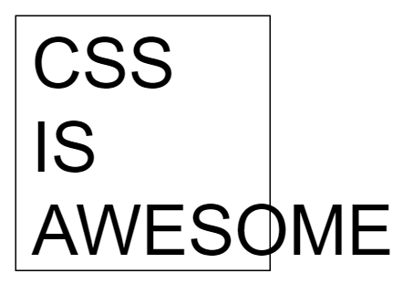
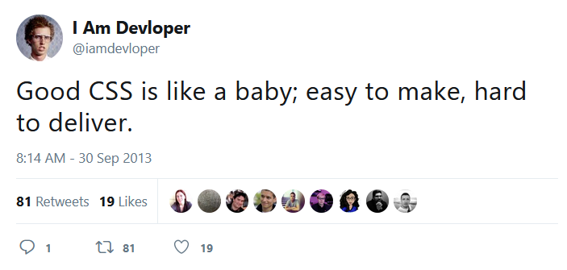
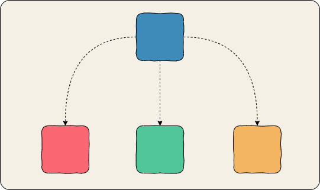
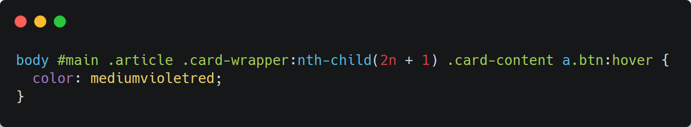
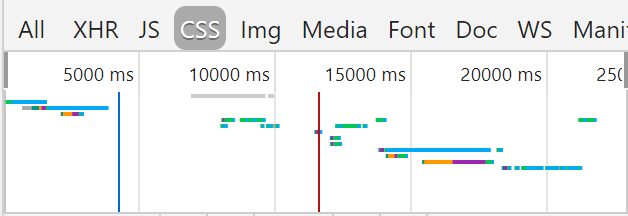
.block {}
.block__element {}
.block__element--modifier {}<form class="form">
<input class="form__input form__input--disabled" />
</form>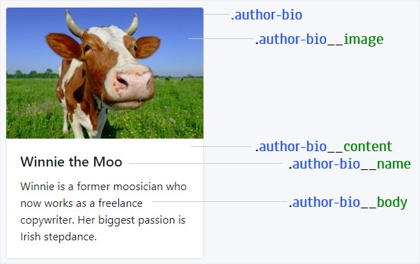
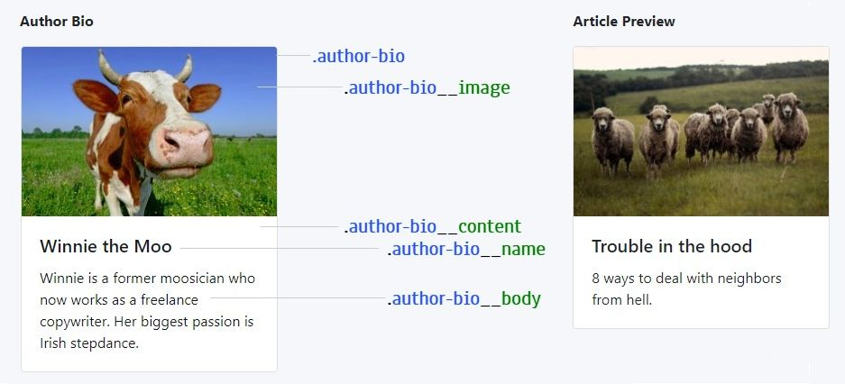
Reusable and adaptable
.article-preview
.article-preview__image
.article-preview__content
.article-preview__title
.article-preview__body* Don’t Repeat Yourself
@extend or mixin
.article-preview { @extend .author-bio; }
.article-preview__image { @extend .author-bio__image; }
.article-preview__content { @extend .author-bio__content; }
.article-preview__title { @extend .author-bio__name; }
.article-preview__body { @extend .author-bio__body; }.media-card
.media-card__image
.media-card__content
.media-card__title
.media-card__body“[…] authors are encouraged to use values that describe the nature of the content, rather than values that describe the desired presentation of the content.”
.bold { font-weight: bold } /* presentational */
.author-name { font-weight: bold } /* semantic */“HTML is for content. CSS is for styling. Separate your concerns.”
<div class="profile-wrapper">
<div class="profile">
<div class="profile-name-wrapper">
<div class="profile-name">Alex</div>
</div>
</div>
</div>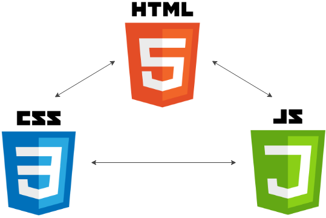
“Separation of concerns”
CSS depends on HTML
HTML is restyleable!
“Mixing concerns”
HTML depends on CSS
CSS is reusable!
Neither approach is “wrong”.
“… is the approach to CSS architecture that favors small, single-purpose classes with names based on visual function.”
Also known as
.position-relative { position: relative }
.display-block { display: block }
.border { border: 1px solid #ccc }
.text-center { text-align: center}
.font-weight-bold { font-weight: bold }
.red { color: red }.font-16 { font-size: 16px }
.font-20 { font-size: 20px }
.font-28 { font-size: 28px }.margin-1 { margin: 0.5rem }
.margin-2 { margin: 1rem }
.margin-3 { margin: 2rem }
.margin-x-2 { margin-left: 1rem; margin-right: 1rem }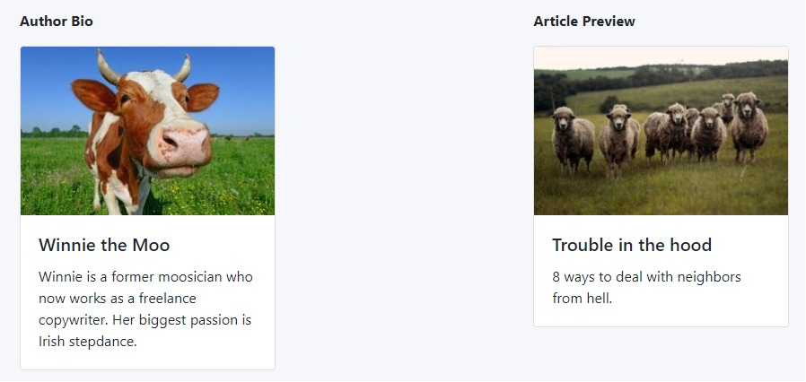
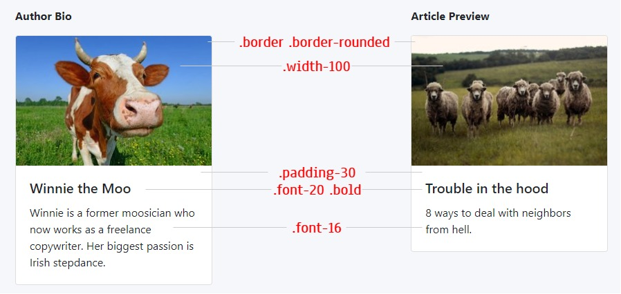
Favors composition over inheritance
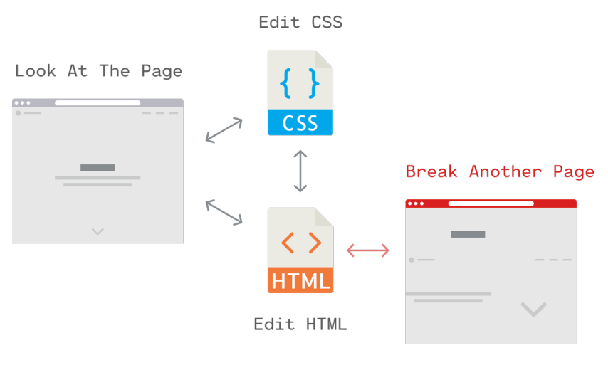
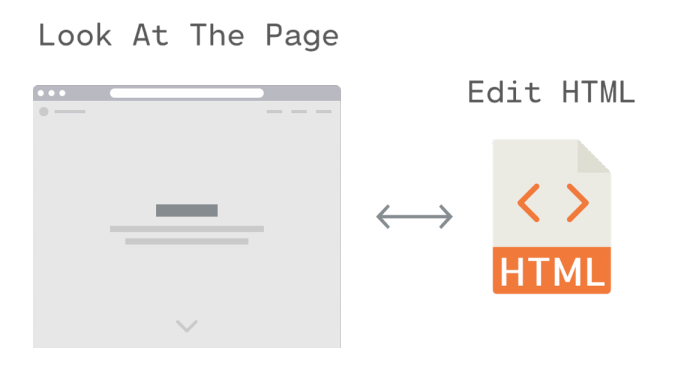
The older your codebase is
the less CSS you will write.
There are 2 hard problems in computer science: cache invalidation, naming things, and off-by-1 errors.
Naming utility classes is straightforward.
.margin-top-0 { margin-top: 0 } /* favors readability */
.mt-0 { margin-top: 0 } /* favors brevity */<div class="profile-wrapper">
<div class="profile-wrapper__name">Alex</div>
</div>
<div class="flex">
<div class="flex-1">Alex</div>
</div>“You know how many times I’ve had to think of a name for a random container that exists simply to align some crap?”
<a class="nav-item link" href="#">Link</a>.link { color: blue }
.nav-item { color: red }
<button class="bg-blue-500 hover:bg-blue-700 text-white
font-bold py-2 px-4 rounded">
<%= label %>
<% if (icon) { %>
<%= icon %>
<% } %>
</button>.btn, .modal)<button class="btn-blue">Button</button>
<style>
.btn-blue {
@apply bg-blue-500 text-white font-bold py-2 px-4 rounded;
}
</style>
<h2 style="font-size: 16px; font-weight: bold; color: purple">
Breaking Bad
</h2><h2 class="font-16 font-bold font-purple">
Breaking Bad
</h2><h2 style="font-size: 16px; font-weight: bold; color: purple">
Breaking Bad
</h2><h2 class="font-16 font-bold font-purple">
Breaking Bad
</h2><div class="flex flex-column flex-md-row">
<div>Element 1</div>
<div>Element 2</div>
</div><div class="mt-4 md:mt-0 md:ml-6 w-64">
<h3 class="uppercase tracking-wide text-sm text-indigo-600">
Marketing
</h3>
<a href="/pricing.html"
class="block mt-1 text-lg leading-tight font-semibold
text-gray-900 hover:underline">Pricing</a>
<p class="mt-2 text-gray-600">
Get the best offer for your business
</p>
</div>.margin-20 → .margin-3.font-16 → .font-300 / .font-medium.color-blue → .color-primaryUse abstract over absolute units
/* expensive */
header#admin-main-header.header--bar-right-part li > a {
line-height: 35px
}
/* cheap */
.line-height-2 { line-height: 35px }CSS styles
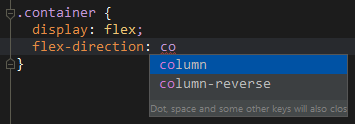
CSS classes
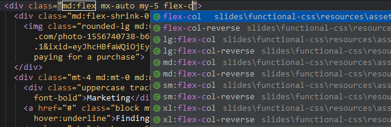
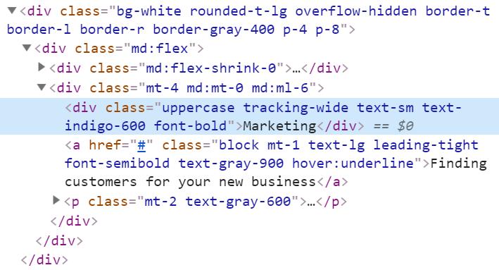
If you love the way you write CSS and don’t want to change… then don’t.
… but
“You have to be prepared to disgard old ideas, look at alternatives, and even revisit ways that you may have previously dismissed.”
github.com / darekkay / presentations
Dariusz Winkler
@darek_kay darekkay.com